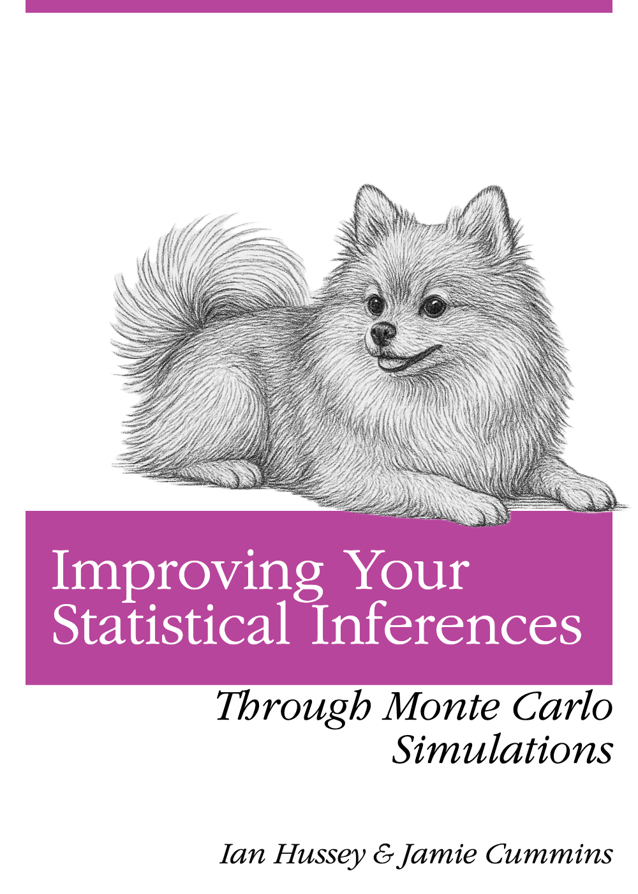

Improving your statistical inferences through Monte Carlo simulations
in R and tidyverse
![]()
Introduction

This Open Source eBook provides materials for the semester-long Master’s seminar course “Improving your statistical inferences through Monte Carlo simulations” that I deliver at the University of Bern’s Institute of Psychology.
This book is split into two parts:
- Learning to simulate. Chapters 2-10 teach you the conceptual structure of Monte Carlo simulation studies, and how to implement them in a modular R/tidyverse workflow that prioritizes understandability and code reusability over execution speed.
- Learning from simulations. The remaining chapters use simulations to better understand and use statistical methods, and to understand and guide the behavior of researchers using those methods.
How to use this book
This book is made up of individual Quarto (.qmd) files. Many of the exercises are easiest to complete in your own local copy of these .qmd files.
We suggest that you download a .zip of the contents of this book’s code and data from GitHub to run the code locally, complete the exercises, etc.
You can also copy and paste the code for any chapter directly from the website. Click the “</> Code” button on the top right of each page to see the full .qmd file’s code. You can copy and paste this into a .qmd file. However, it’s probably easier to download all the .qmd files and data as mentioned above.
Learning to code is a practice skill. Almost anyone can become competent in writing reproducible code for data simulation and simulation studies with practice. More than anything else, completing this course requires that you practice in your own time, using not only the examples provided but also ones you create yourself.
Other learning resources
There are many excellent Open Source resources to learn simulation studies in R and {tidyverse}. Readers are encouraged to seek them out to support the materials already provided in this book. I can particularly recommend the following ones:
- Miratrix and Pustejovsky (2026) Designing Monte Carlo Simulations in R. jepusto.github.io/Designing-Simulations-in-R
- Strobl et al. (2024) Simulationsstudien in R: Design und praktische Durchführung. doi: doi.org/10.1007/978-3-662-70561-2 [English translation should be available in late 2026]
There is also a growing literature on reporting standards, preregistration, and meta-research on simulations such as the risk of Questionable Research Practices in simulation studies. In particularly I recommend:
- Siepe et al. (2026) Why, when, and how to (or not to) preregister a simulation study. osf.io/cxjrb_v1
- Siepe et al. (2024) Simulation studies for methodological research in psychology: A standardized template for planning, preregistration, and reporting. Psychological Methods. doi: 10.1037/met0000695
- Pawel et al. (2023) Pitfalls and potentials in simulation studies: Questionable research practices in comparative simulation studies allow for spurious claims of superiority of any method. Biometrical Journal. doi: 10.1002/bimj.202200091
Contributing
If you are interested in contributing to or adapting this eBook, all code and data are available on GitHub.